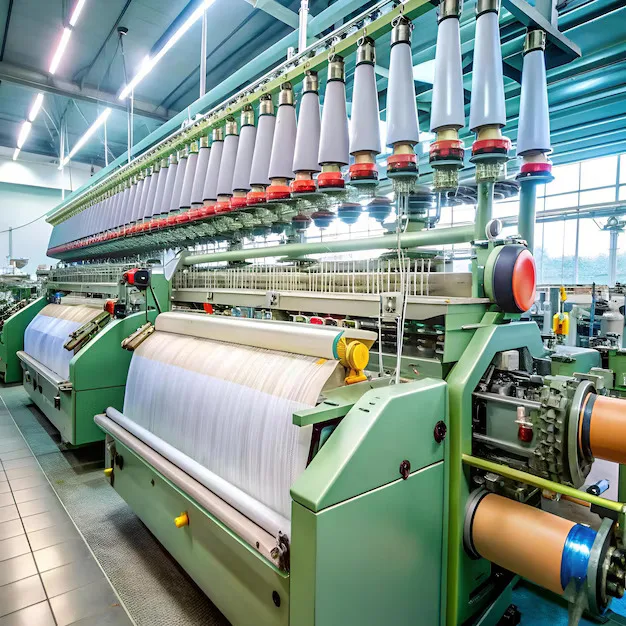
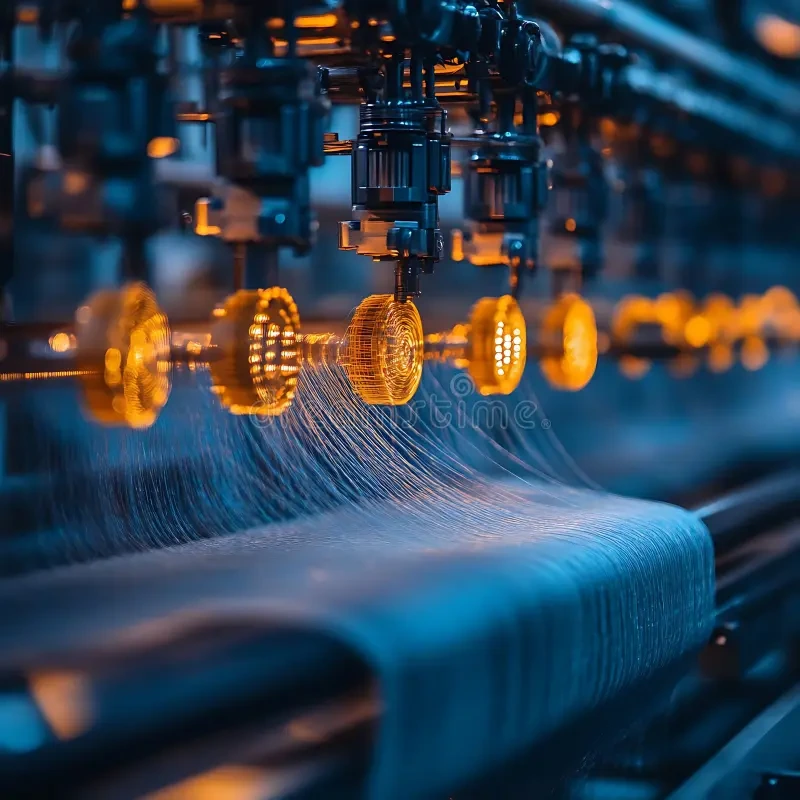
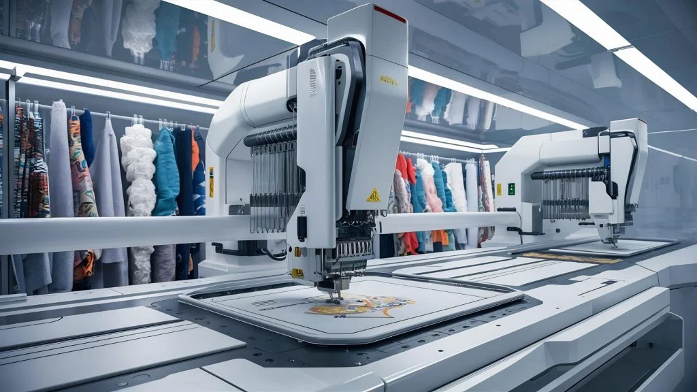

Raw Cotton Selection
We source premium cotton fibers from trusted farms to ensure superior fabric quality.
Stackly Fablio Textile Industry manufactures premium-quality textiles using advanced technology and sustainable production methods. Our fabrics are trusted worldwide for fashion, home furnishing, and industrial applications.



Years Experience

Stackly Textile Industry manufactures premium-quality cotton, woven, and industrial fabrics using advanced technology, sustainable production methods, and international quality standards for customers around the world.
From Stacklypremium raw materials to high-quality finished fabrics.
Premium cotton, silk, and yarn are carefully selected from trusted suppliers.
Modern weaving machines produce durable and high-quality fabric with precision.
Eco-friendly dyeing and finishing improve texture, color, and fabric quality.
Every product is quality checked, packed safely, and shipped worldwide.

Our factory uses advanced spinning, weaving, dyeing, and finishing machines to produce premium-quality fabrics with precision, speed, and eco-friendly technology.
Machines
Production
Quality
Countries


We deliver sustainable fabric production, modern weaving technology, quality inspection, and export-ready textile solutions for international apparel manufacturers.
Countries Exported
Modern Looms
Tons Production
Quality Rate

We source premium cotton fibers from trusted farms to ensure superior fabric quality.
Advanced spinning machines transform fibers into durable, uniform yarn.
High-speed looms weave strong, smooth, and export-quality fabrics.
Eco-friendly colors and modern printing technology create vibrant textile designs.
Each product is quality-tested, packed securely, and delivered worldwide.